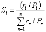

Ei = (ri – Pi) / (ri +Pi)
where ri is the relative abundance of a prey in a predator's diet and Pi is the prey's relative abundance in the ecosystem. Ei is scaled so that Ei = -1 corresponds to total avoidance of, Ei = 0 represents non-selective feeding on, and Ei = 1 shows exclusive feeding on a given prey i. Note that within Ecopath, ri and Pi refer to biomass, not numbers.
The Ivlev electivity index was included in the DOS version of Ecopath because it often shows up in the literature. This index has, however, a major shortcoming, seriously limiting its usefulness as a selection index: as shown by several authors, e.g., Jacobs (1974): the Ivlev index is not independent of prey density.

where ri and Pi are defined as above, and n is the number of groups in the system. The standardized forage ratio as originally presented takes values between 0 and 1, with Si = 0 representing avoidance and Si = 1 exclusive feeding.
As implemented in Ecopath, the forage ratio has been transformed (linearly) such as to vary between -1 and 1, so that -1, 0 and 1 can be interpreted as for the Ivlev index.